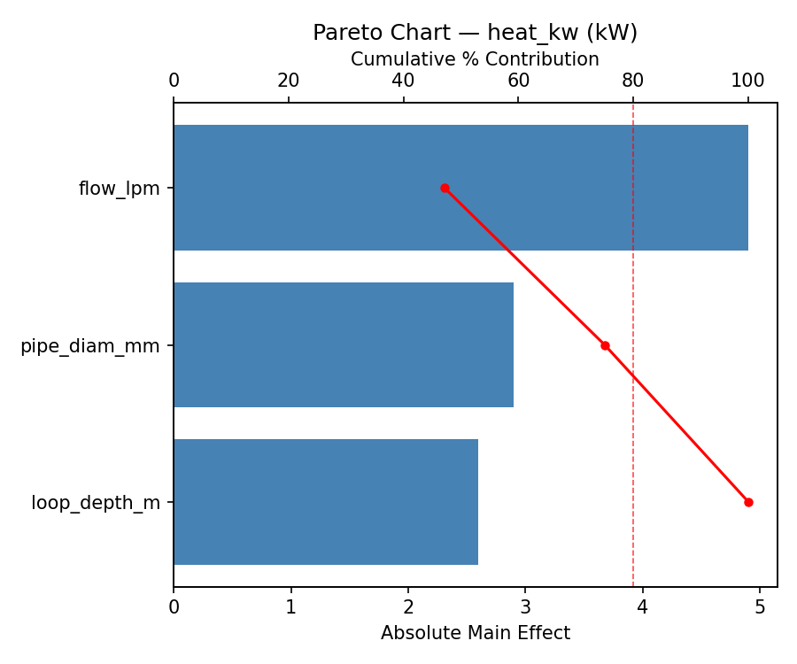
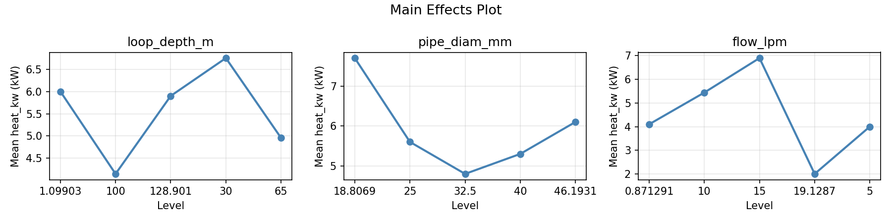
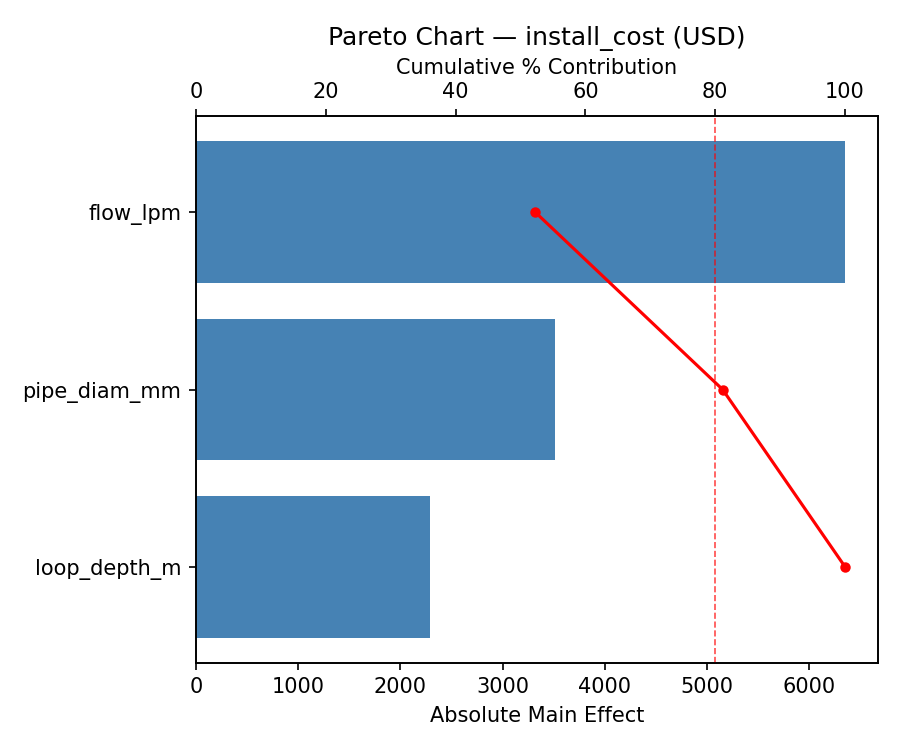
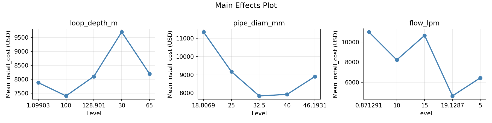
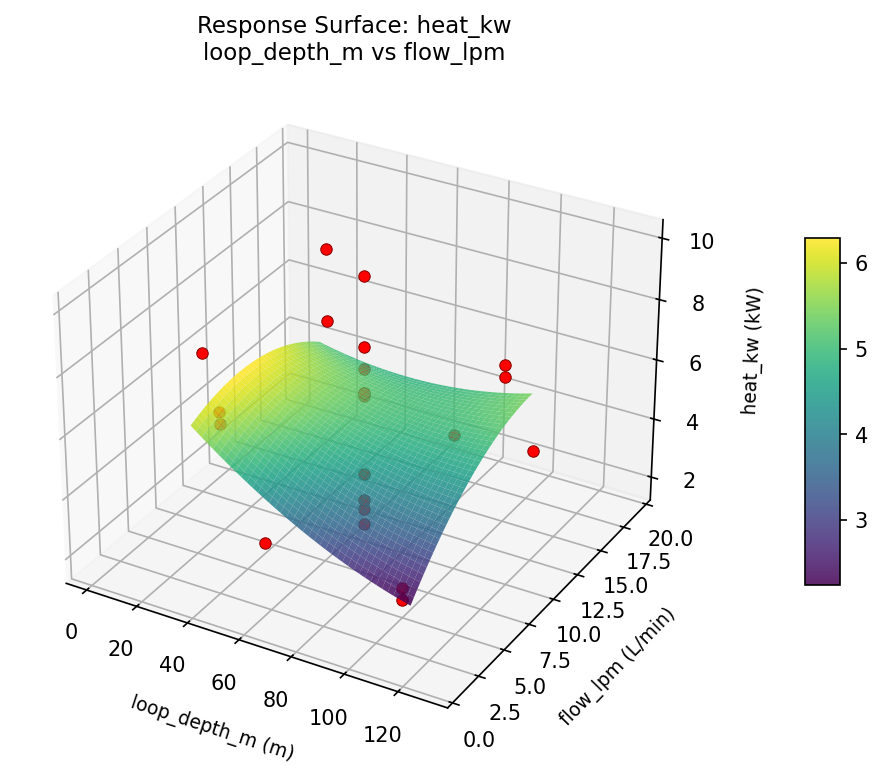
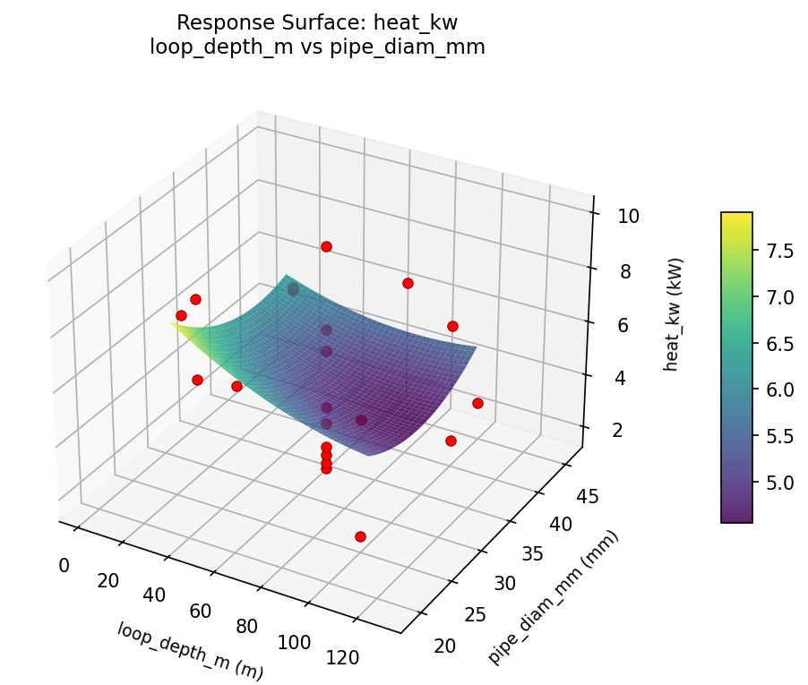
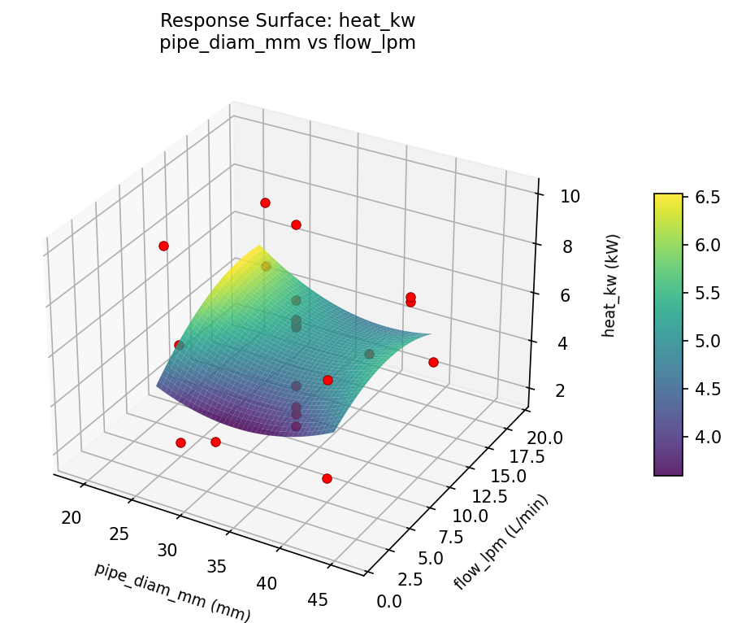
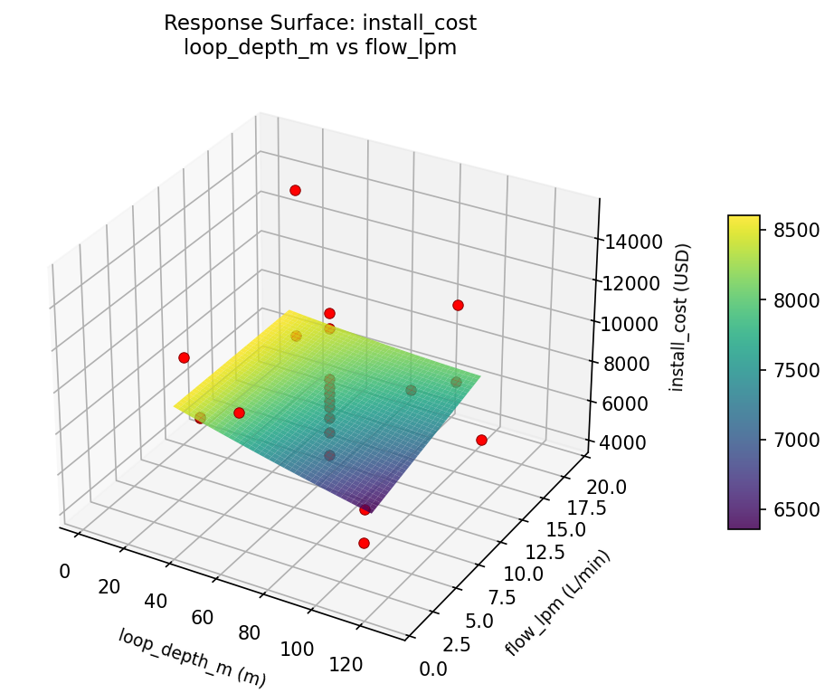
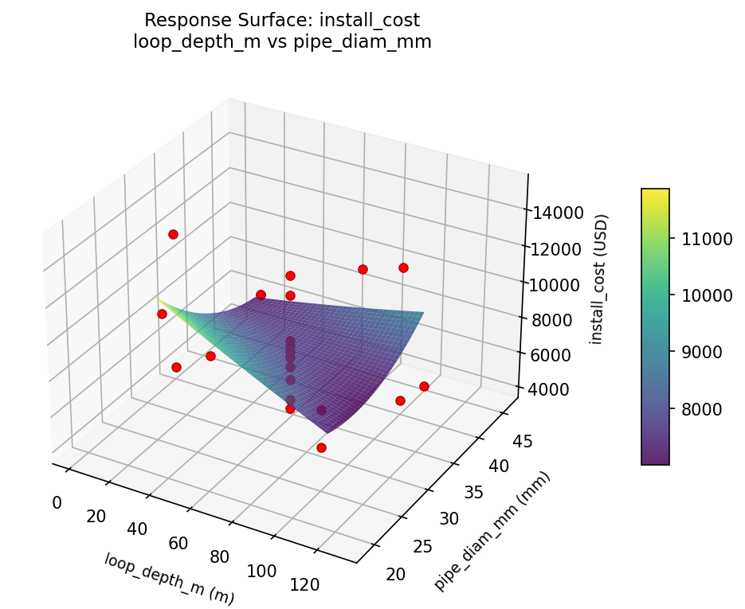
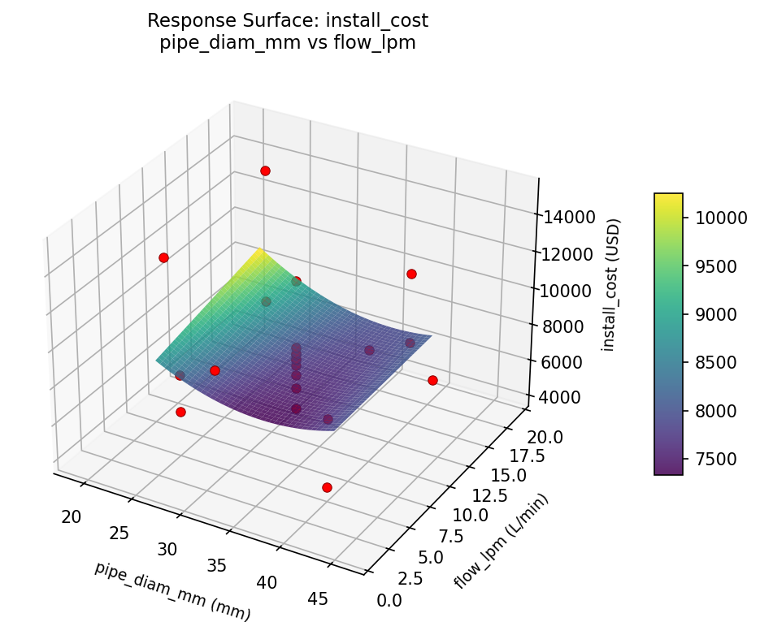

Summary
This experiment investigates geothermal ground loop design. Central composite design to maximize heat extraction and minimize installation cost by tuning loop depth, pipe diameter, and flow rate.
The design varies 3 factors: loop depth m (m), ranging from 30 to 100, pipe diam mm (mm), ranging from 25 to 40, and flow lpm (L/min), ranging from 5 to 15. The goal is to optimize 2 responses: heat kw (kW) (maximize) and install cost (USD) (minimize). Fixed conditions held constant across all runs include soil conductivity = 1.5_W_mK, grout = enhanced.
A Central Composite Design (CCD) was selected to fit a full quadratic response surface model, including curvature and interaction effects. With 3 factors this produces 22 runs including center points and axial (star) points that extend beyond the factorial range.
Quadratic response surface models were fitted to capture potential curvature and factor interactions. The RSM contour plots below visualize how pairs of factors jointly affect each response.
Key Findings
For heat kw, the most influential factors were flow lpm (47.1%), pipe diam mm (27.9%), loop depth m (25.0%). The best observed value was 10.0 (at loop depth m = 65, pipe diam mm = 32.5, flow lpm = 10).
For install cost, the most influential factors were flow lpm (52.3%), pipe diam mm (28.9%), loop depth m (18.9%). The best observed value was 4172.0 (at loop depth m = 30, pipe diam mm = 25, flow lpm = 15).
Recommended Next Steps
- Run confirmation experiments at the predicted optimal settings to validate the model.
- Consider whether any fixed factors should be varied in a future study.
Experimental Setup
Factors
| Factor | Low | High | Unit |
|---|
loop_depth_m | 30 | 100 | m |
pipe_diam_mm | 25 | 40 | mm |
flow_lpm | 5 | 15 | L/min |
Fixed: soil_conductivity = 1.5_W_mK, grout = enhanced
Responses
| Response | Direction | Unit |
|---|
heat_kw | ↑ maximize | kW |
install_cost | ↓ minimize | USD |
Configuration
{
"metadata": {
"name": "Geothermal Ground Loop Design",
"description": "Central composite design to maximize heat extraction and minimize installation cost by tuning loop depth, pipe diameter, and flow rate"
},
"factors": [
{
"name": "loop_depth_m",
"levels": [
"30",
"100"
],
"type": "continuous",
"unit": "m"
},
{
"name": "pipe_diam_mm",
"levels": [
"25",
"40"
],
"type": "continuous",
"unit": "mm"
},
{
"name": "flow_lpm",
"levels": [
"5",
"15"
],
"type": "continuous",
"unit": "L/min"
}
],
"fixed_factors": {
"soil_conductivity": "1.5_W_mK",
"grout": "enhanced"
},
"responses": [
{
"name": "heat_kw",
"optimize": "maximize",
"unit": "kW"
},
{
"name": "install_cost",
"optimize": "minimize",
"unit": "USD"
}
],
"settings": {
"operation": "central_composite",
"test_script": "use_cases/238_geothermal_heat_loop/sim.sh"
}
}
Experimental Matrix
The Central Composite Design produces 22 runs. Each row is one experiment with specific factor settings.
| Run | loop_depth_m | pipe_diam_mm | flow_lpm |
|---|
| 1 | 65 | 32.5 | 10 |
| 2 | 100 | 25 | 15 |
| 3 | 30 | 40 | 5 |
| 4 | 65 | 46.1931 | 10 |
| 5 | 65 | 32.5 | 10 |
| 6 | 1.09903 | 32.5 | 10 |
| 7 | 65 | 32.5 | 0.871291 |
| 8 | 65 | 32.5 | 10 |
| 9 | 100 | 40 | 5 |
| 10 | 128.901 | 32.5 | 10 |
| 11 | 65 | 32.5 | 10 |
| 12 | 65 | 18.8069 | 10 |
| 13 | 65 | 32.5 | 10 |
| 14 | 30 | 25 | 15 |
| 15 | 65 | 32.5 | 10 |
| 16 | 100 | 25 | 5 |
| 17 | 65 | 32.5 | 19.1287 |
| 18 | 100 | 40 | 15 |
| 19 | 65 | 32.5 | 10 |
| 20 | 30 | 25 | 5 |
| 21 | 30 | 40 | 15 |
| 22 | 65 | 32.5 | 10 |
Step-by-Step Workflow
1
Preview the design
$ python doe.py info --config use_cases/238_geothermal_heat_loop/config.json
2
Generate the runner script
$ python doe.py generate --config use_cases/238_geothermal_heat_loop/config.json \
--output use_cases/238_geothermal_heat_loop/results/run.sh --seed 42
3
Execute the experiments
$ bash use_cases/238_geothermal_heat_loop/results/run.sh
4
Analyze results
$ python doe.py analyze --config use_cases/238_geothermal_heat_loop/config.json
5
Get optimization recommendations
$ python doe.py optimize --config use_cases/238_geothermal_heat_loop/config.json
6
Generate the HTML report
$ python doe.py report --config use_cases/238_geothermal_heat_loop/config.json \
--output use_cases/238_geothermal_heat_loop/results/report.html
Features Exercised
| Feature | Value |
|---|
| Design type | central_composite |
| Factor types | continuous (all 3) |
| Arg style | double-dash |
| Responses | 2 (heat_kw ↑, install_cost ↓) |
| Total runs | 22 |
Analysis Results
Generated from actual experiment runs using the DOE Helper Tool.
Response: heat_kw
Top factors: flow_lpm (47.1%), pipe_diam_mm (27.9%), loop_depth_m (25.0%).
Pareto Chart

Main Effects Plot

Response: install_cost
Top factors: flow_lpm (52.3%), pipe_diam_mm (28.9%), loop_depth_m (18.9%).
Pareto Chart

Main Effects Plot

Response Surface Plots
3D surfaces fitted with quadratic RSM. Red dots are observed data points.
heat kw loop depth m vs flow lpm

heat kw loop depth m vs pipe diam mm

heat kw pipe diam mm vs flow lpm

install cost loop depth m vs flow lpm

install cost loop depth m vs pipe diam mm

install cost pipe diam mm vs flow lpm

Full Analysis Output
RSM surface: rsm_heat_kw_loop_depth_m_vs_pipe_diam_mm.png
RSM surface: rsm_heat_kw_loop_depth_m_vs_flow_lpm.png
RSM surface: rsm_heat_kw_pipe_diam_mm_vs_flow_lpm.png
RSM surface: rsm_install_cost_loop_depth_m_vs_pipe_diam_mm.png
RSM surface: rsm_install_cost_loop_depth_m_vs_flow_lpm.png
RSM surface: rsm_install_cost_pipe_diam_mm_vs_flow_lpm.png
=== Main Effects: heat_kw ===
Factor Effect Std Error % Contribution
--------------------------------------------------------------
flow_lpm 4.9000 0.4998 47.1%
pipe_diam_mm 2.9000 0.4998 27.9%
loop_depth_m 2.6000 0.4998 25.0%
=== Summary Statistics: heat_kw ===
loop_depth_m:
Level N Mean Std Min Max
------------------------------------------------------------
1.09903 1 6.0000 0.0000 6.0000 6.0000
100 4 4.1500 2.4933 1.8000 6.5000
128.901 1 5.9000 0.0000 5.9000 5.9000
30 4 6.7500 1.3178 5.8000 8.7000
65 12 4.9583 2.6235 1.8000 10.0000
pipe_diam_mm:
Level N Mean Std Min Max
------------------------------------------------------------
18.8069 1 7.7000 0.0000 7.7000 7.7000
25 4 5.6000 2.8484 1.8000 8.7000
32.5 12 4.8000 2.4965 1.8000 10.0000
40 4 5.3000 2.0704 2.2000 6.5000
46.1931 1 6.1000 0.0000 6.1000 6.1000
flow_lpm:
Level N Mean Std Min Max
------------------------------------------------------------
0.871291 1 4.1000 0.0000 4.1000 4.1000
10 12 5.4417 2.4381 1.8000 10.0000
15 4 6.9000 1.2111 6.1000 8.7000
19.1287 1 2.0000 0.0000 2.0000 2.0000
5 4 4.0000 2.3209 1.8000 6.2000
=== Main Effects: install_cost ===
Factor Effect Std Error % Contribution
--------------------------------------------------------------
flow_lpm 6353.0000 556.7937 52.3%
pipe_diam_mm 3510.3333 556.7937 28.9%
loop_depth_m 2293.7500 556.7937 18.9%
=== Summary Statistics: install_cost ===
loop_depth_m:
Level N Mean Std Min Max
------------------------------------------------------------
1.09903 1 7880.0000 0.0000 7880.0000 7880.0000
100 4 7401.5000 3242.4132 4172.0000 11686.0000
128.901 1 8102.0000 0.0000 8102.0000 8102.0000
30 4 9695.2500 3610.0173 7839.0000 15110.0000
65 12 8195.7500 2359.3328 4643.0000 12079.0000
pipe_diam_mm:
Level N Mean Std Min Max
------------------------------------------------------------
18.8069 1 11350.0000 0.0000 11350.0000 11350.0000
25 4 9174.2500 4074.1023 5826.0000 15110.0000
32.5 12 7839.6667 2118.4381 4643.0000 12079.0000
40 4 7922.5000 3067.5886 4172.0000 11686.0000
46.1931 1 8905.0000 0.0000 8905.0000 8905.0000
flow_lpm:
Level N Mean Std Min Max
------------------------------------------------------------
0.871291 1 10996.0000 0.0000 10996.0000 10996.0000
10 12 8224.3333 1927.4622 5132.0000 12079.0000
15 4 10659.5000 3457.3313 7920.0000 15110.0000
19.1287 1 4643.0000 0.0000 4643.0000 4643.0000
5 4 6437.2500 1793.0212 4172.0000 7912.0000
Pareto chart (heat_kw): use_cases/238_geothermal_heat_loop/results/analysis/pareto_heat_kw.png
Pareto chart (install_cost): use_cases/238_geothermal_heat_loop/results/analysis/pareto_install_cost.png
Main effects (heat_kw): use_cases/238_geothermal_heat_loop/results/analysis/main_effects_heat_kw.png
Main effects (install_cost): use_cases/238_geothermal_heat_loop/results/analysis/main_effects_install_cost.png
Optimization Recommendations
=== Optimization: heat_kw ===
Direction: maximize
Best observed run: #18
loop_depth_m = 65
pipe_diam_mm = 32.5
flow_lpm = 10
Value: 10.0
RSM Model (linear, R² = 0.0829, Adj R² = -0.0699):
Coefficients:
intercept +5.2273
loop_depth_m -0.4090
pipe_diam_mm -0.1309
flow_lpm +0.6841
RSM Model (quadratic, R² = 0.4930, Adj R² = 0.1128):
Coefficients:
intercept +6.7404
loop_depth_m -0.4090
pipe_diam_mm -0.1309
flow_lpm +0.6841
loop_depth_m*pipe_diam_mm -0.3000
loop_depth_m*flow_lpm +1.3500
pipe_diam_mm*flow_lpm +0.3750
loop_depth_m^2 -0.9916
pipe_diam_mm^2 -0.6016
flow_lpm^2 -0.6766
Curvature analysis:
loop_depth_m coef=-0.9916 concave (has a maximum)
flow_lpm coef=-0.6766 concave (has a maximum)
pipe_diam_mm coef=-0.6016 concave (has a maximum)
Notable interactions:
loop_depth_m*flow_lpm coef=+1.3500 (synergistic)
pipe_diam_mm*flow_lpm coef=+0.3750 (synergistic)
Predicted optimum (from quadratic model):
loop_depth_m = 65
pipe_diam_mm = 32.5
flow_lpm = 10
Predicted value: 6.7404
Model quality: Weak fit — consider adding center points or using a different design.
Factor importance:
1. flow_lpm (effect: 4.4, contribution: 35.7%)
2. loop_depth_m (effect: 4.0, contribution: 32.7%)
3. pipe_diam_mm (effect: 3.9, contribution: 31.6%)
=== Optimization: install_cost ===
Direction: minimize
Best observed run: #6
loop_depth_m = 30
pipe_diam_mm = 25
flow_lpm = 15
Value: 4172.0
RSM Model (linear, R² = 0.0201, Adj R² = -0.1432):
Coefficients:
intercept +8305.3637
loop_depth_m -95.5443
pipe_diam_mm +114.0287
flow_lpm +417.3860
RSM Model (quadratic, R² = 0.3788, Adj R² = -0.0871):
Coefficients:
intercept +9597.8636
loop_depth_m -95.5443
pipe_diam_mm +114.0287
flow_lpm +417.3851
loop_depth_m*pipe_diam_mm -72.7500
loop_depth_m*flow_lpm +1266.7500
pipe_diam_mm*flow_lpm +1024.7500
loop_depth_m^2 -131.1008
pipe_diam_mm^2 -949.3456
flow_lpm^2 -858.3016
Curvature analysis:
pipe_diam_mm coef=-949.3456 concave (has a maximum)
flow_lpm coef=-858.3016 concave (has a maximum)
loop_depth_m coef=-131.1008 concave (has a maximum)
Notable interactions:
loop_depth_m*flow_lpm coef=+1266.7500 (synergistic)
pipe_diam_mm*flow_lpm coef=+1024.7500 (synergistic)
loop_depth_m*pipe_diam_mm coef=-72.7500 (antagonistic)
Predicted optimum (from quadratic model):
loop_depth_m = 100
pipe_diam_mm = 40
flow_lpm = 15
Predicted value: 10313.7351
Model quality: Weak fit — consider adding center points or using a different design.
Factor importance:
1. loop_depth_m (effect: 4032.8, contribution: 36.0%)
2. pipe_diam_mm (effect: 3950.7, contribution: 35.3%)
3. flow_lpm (effect: 3206.1, contribution: 28.7%)